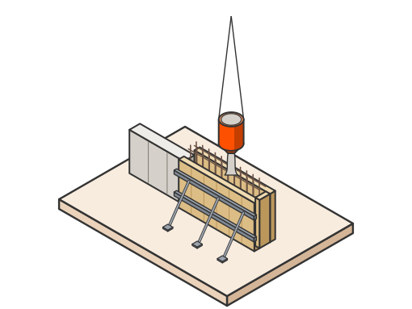
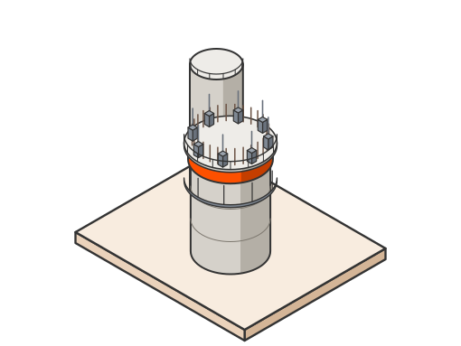
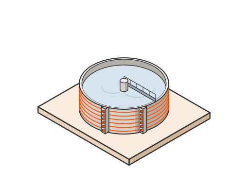
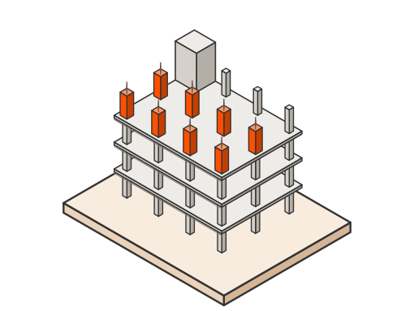

Betonirakentaminen ja paikallavalu vaativiin kohteisiin
Paikallavalu, liukuvalu, jännitetyt säiliöt ja betonirungot omilla timpureilla ja raudoittajilla. Sama osaaminen tuulivoimaloiden perustuksissa, teollisuudessa ja pysäköintitaloissa.
- Omat timpurit ja raudoittajat
- Paikallavalua vuodesta 2004
- RALA-pätevyys
Ennen kuin valitset urakoitsijan
245
omaa työntekijää
Omat tekijät montussa
Muotti-, raudoitus- ja valutyö omalla väellä, ei aliurakkaketjuna.
22
vuotta paikallavalua
Kokemusta vaativista valuista
Paikallavaletut teollisuuden betonirakenteet ovat olleet ydinosaamistamme vuodesta 2004. Suurten valujen lämpötila ja aikataulu hallitaan myös talvella.
4
pysäköintitaloa työn alla yhtä aikaa
Kapasiteettia useaan kohteeseen
Useampi suuri valukohde samaan aikaan omalla väellä.
Menetelmät
Valitsemme menetelmän rakenteen, aikataulun ja olosuhteiden mukaan, ja kerromme suunnittelijalle vaihtoehdot jo luonnosvaiheessa.

Paikallavalu
Muotit, raudoitus ja valu työmaalla. Vapaat muodot ja massiiviset rakenteet onnistuvat, eikä elementtien kuljetus rajoita kokoa.
- Sopii
- Koneperustuksiin, tuulivoimaloiden perustuksiin ja vaativiin muotoihin.

Liukuvalu
Jatkuva valu nousevalla muotilla. Korkea rakenne valmistuu nopeasti ja ilman työsaumoja.
- Sopii
- Siiloihin, torneihin ja hissikuiluihin.

Jännitetyt betonisäiliöt
Jännitetty betoni pitää säiliön tiiviinä ja kestävänä vuosikymmeniä.
- Sopii
- Puhdistamoihin sekä prosessi- ja vesisäiliöihin.

Betonirungot
Paikallavalu- ja elementtirungot, myös yhdistelmänä, kun kohde tarvitsee molempia.
- Sopii
- Pysäköintitaloihin, toimitiloihin ja teollisuusrakennuksiin.
Hanke mielessä?
Yksi yhteyshenkilö vastaa koko hankkeesta. Kerro, mitä suunnittelet, niin kerromme, miten toteutamme sen.
Näin hanke etenee
Mukaan jo suunnitteluun
Sama suunnittelija luonnoksesta käyttöönottoon.
Toteutusmalli valitaan yhdessä
Kokonaisurakka, KVR, SR tai BoP hankkeen mukaan.
Omat tekijät ja kalusto työmaalla
Ei aliurakkaketjuja kriittisissä töissä.
Laatu ja turvallisuus
Sertifioitu johtamisjärjestelmä ja RALA-pätevyys.
Suunnittele betonirakenne kanssamme
Oma suunnittelijamme on mukana luonnoksesta käyttöönottoon. Kun työmaalla jokin menee toisin kuin piirustus antaa olettaa, ratkaisu syntyy samana päivänä eikä kiertele suunnittelutoimiston kautta.
Mukana jo luonnosvaiheessa
Vertailemme menetelmät jo luonnosvaiheessa: paikallavalu, elementti vai yhdistelmä.
Rakennettavuuspalaute
Kerromme, mikä on toteutettavissa ja mitä se maksaa, ennen kuin ratkaisut lukitaan. Raudoitus- ja muottiratkaisut ovat rakennettavissa talvellakin.
Vaativat muodot paikallavaluna
Kun elementti ei taivu muotoon, valamme sen paikalla. Massiivivaluille teemme lämpötilasuunnitelman ennen ensimmäistä valua.
Toteutusmallit
Sovimme mallin hankkeen mukaan. Mitä aiemmin olemme mukana, sitä enemmän voimme vaikuttaa ratkaisuihin ja kustannuksiin.
Kokonaisurakka
Tilaaja teettää suunnitelmat. KSBR rakentaa koko kohteen yhdellä sopimuksella.
KVR-urakka
KSBR vastaa sekä suunnittelusta että rakentamisesta. Tilaaja määrittelee tavoitteet ja lopputuloksen.
SR-urakka
Tilaaja on teettänyt yleissuunnitelmat. KSBR tekee toteutussuunnittelun ja rakentaa.
Betoni toimialoittain
Sama betoniosaaminen kaikilla toimialoillamme.
Energia
Tuulipuistot, sähköasemat, sähköverkot ja akkuenergiavarastot.
Teollisuus
Tehtaat, säiliöt ja prosessitilat käyvän laitoksen ehdoilla.
Datakeskukset
Perustukset, betonirungot ja infra aikataulussa, joka ei jousta.
Infra
Maanrakennus, tiet, nostoalueet ja voimajohtojen perustukset.
Pysäköinti ja toimitilat
Pysäköintitalot ja toimitilat paikallavaluna tai elementeistä.
Usein kysyttyä betonirakentamisesta
Milloin paikallavalu kannattaa elementtien sijaan?
Mitä liukuvalulla voi rakentaa?
Voiko betonia valaa pakkasella?
Teettekö betonityöt omalla väellä?
Yhteyshenkilöt
Suunnittelija voi kysyä suoraan, ilman tarjouspyyntöä.
Suunnittele kanssamme
Kerro kohteesta ja vaiheesta. Asiantuntija ottaa yhteyttä.
Haluatko rakentaa Suomen vaativimpia kohteita?
Meillä et pääse helpolla, mutta pääset eteenpäin.